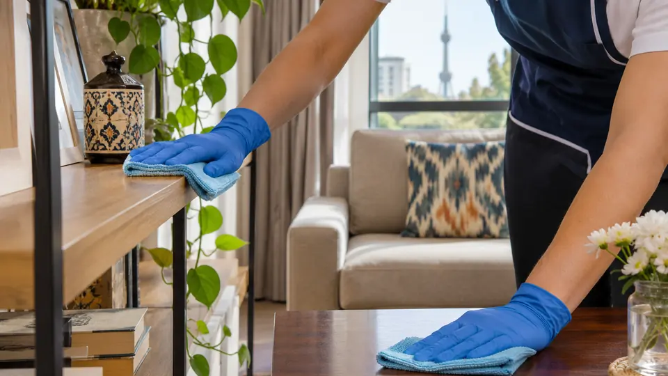
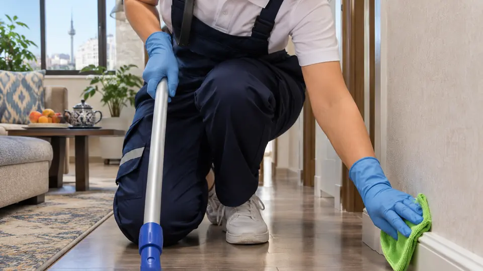
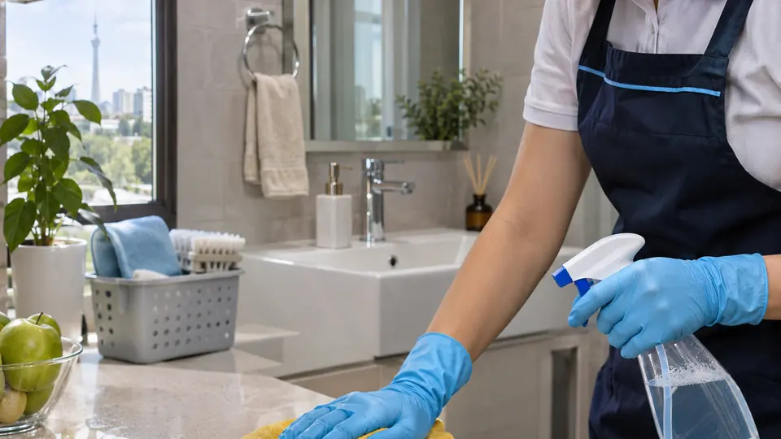
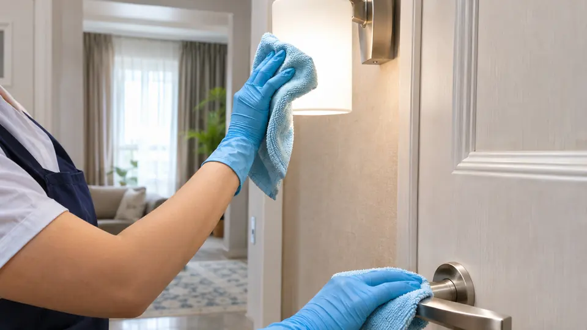

01Chang va ochiq yuzalar
Barcha ochiq yuzalar, oshxona, sanuzel, eshiklar, plintuslar va qiyin yetiladigan joylarni batafsil tozalaymiz.




GoClean Toshkentdagi kvartira, hovli va ofislar uchun general tozalash xizmatini taklif qiladi. Ochiq yuzalar, pol va plintuslar, oshxona va sanuzel, eshiklar, yoritgichlar hamda kelishilgan qiyin yetiladigan joylar batafsil tozalanadi.
Boshlang‘ich narx 500 000 so‘mdan, bir xodim chaqiruvi uchun. Yakuniy narx obyekt turi, taxminiy maydon, zonalar va xizmat tarkibi operator bilan aniqlashtirilgach aytiladi.
Ochiq yuzalar, pol va plintuslar, oshxona va sanuzel, eshiklar va yoritgichlar asosiy xizmat tarkibiga kiradi. Qo‘shimcha vazifalar operator bilan alohida kelishiladi.
Boshlang‘ich narx 500 000 so‘mdan, bir xodim chaqiruvi uchun. Yakuniy narx obyekt va xizmat tarkibi aniqlashtirilgach aytiladi.
Ha, xizmat kvartira, hovli va ofislar uchun ko‘rsatiladi.
Saytdagi qisqa formada ism va telefon raqamini qoldirish kifoya. Operator manzil, vaqt, xizmat tarkibi va narxni telefonda aniqlashtiradi.
GoClean предлагает генеральную уборку квартир, домов с двором и офисов в Ташкенте. Услуга включает детальную очистку открытых поверхностей, полов и плинтусов, кухни и санузла, дверей, светильников и согласованных труднодоступных мест.
Стартовая стоимость — от 500 000 сум за вызов одного сотрудника. Окончательная стоимость определяется после уточнения типа объекта, примерной площади, зон и состава услуги.
В основной состав входят открытые поверхности, полы и плинтусы, кухня и санузел, двери и светильники. Дополнительные задачи согласуются с оператором.
Стартовая стоимость — от 500 000 сум за вызов одного сотрудника. Окончательная стоимость определяется после уточнения объекта и состава работ.
Да. Услуга доступна для квартир, домов с двором и офисов.
Достаточно оставить имя и номер телефона. Адрес, время, состав услуги и стоимость уточняются с оператором.
Kerakli xizmatni tanlab, qisqa arizaga o‘ting.
Faqat ism va telefon raqamingiz yetarli.
Manzil, vaqt, xizmat tarkibi va narxni telefonda aniqlashtiring.